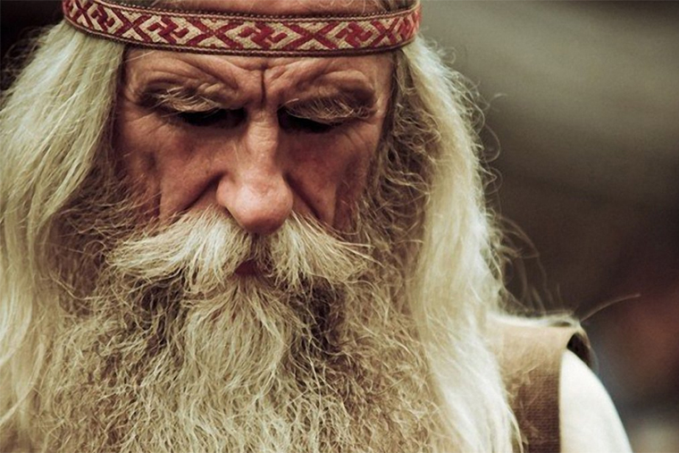

Обо мне
Фотограф, которому важны человек и атмосфера
Я пришел в фотографию через любовь к наблюдению за простыми моментами: взглядом, движением руки, тишиной в кадре, светом на коже. Со временем это выросло в постоянную практику и работу с частными клиентами и локальными брендами.

Виктор Корнеплод
Мне близки спокойные съёмки, в которых человек не играет роль, а просто остаётся собой. Я много работаю с естественным светом, мягкой цветокоррекцией и ритмом серии, чтобы итоговые фотографии выглядели актуально не один сезон.
Если вы волнуетесь перед камерой — это нормально. Я умею выстраивать процесс так, чтобы постепенно ушло напряжение и появилась лёгкость.
- ПортретыЖенские и мужские съёмки, творческие серии, кадры для личного бренда.
- СемьяНенавязчивые съёмки дома, на прогулке или в студии без жёсткой постановки.
- КонтентВизуал для брендов, мастерских и камерных проектов.